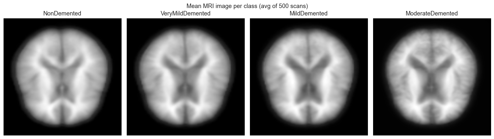
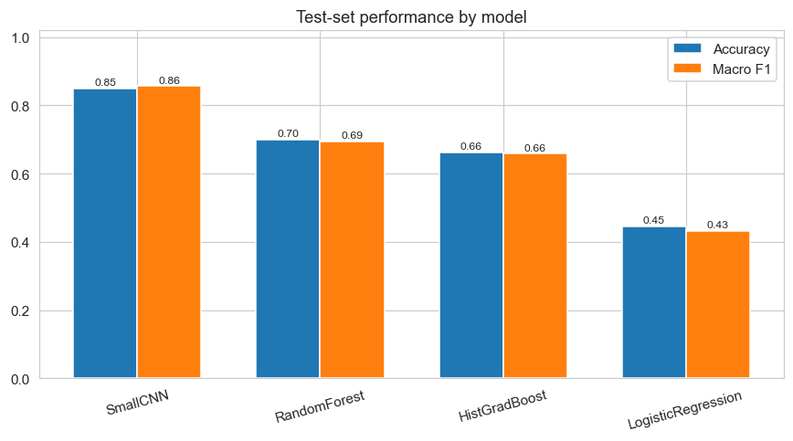
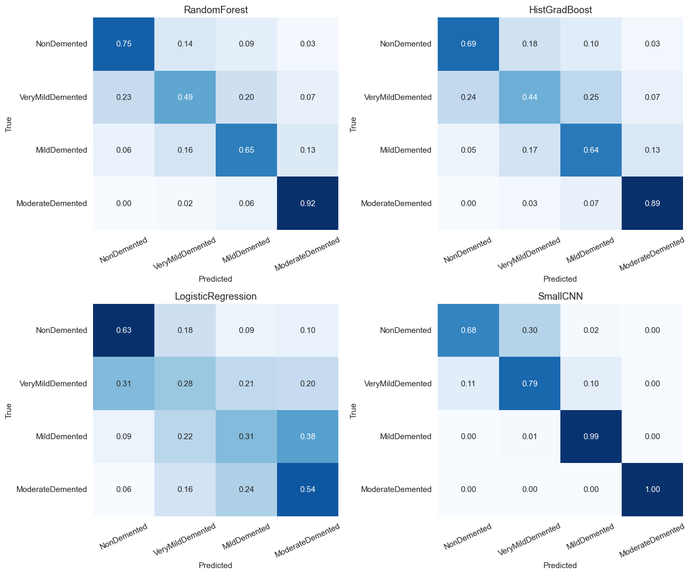

Dementia MRI Classification
Four-stage dementia classification from axial brain MRI — classical machine learning versus a custom CNN.

Problem
Given a single axial MRI slice, predict one of four ordered dementia stages: NonDemented, VeryMildDemented, MildDemented, or ModerateDemented. Automated staging can support screening and triage. Family experience with dementia made the problem concrete, but the work is framed as a technical comparison: do summary image statistics hold up against a model that sees spatial structure?
Dataset
I used Aryan Singhal’s Alzheimer’s Multiclass Dataset on Kaggle: about 44,000 preprocessed 200×190 JPEG slices, roughly balanced across the four classes. Majority-class accuracy is about 29%. Images were converted to grayscale and resized (128×128 for features, 96×96 for the CNN), then split 70/15/15 with stratification and a fixed seed.

Two pipelines
Classical ML. Fifteen hand-crafted features per image: mean/std intensity, Canny edge density, an 8-bin histogram, and four GLCM texture stats. Scaled features trained Logistic Regression, Random Forest (300 trees, balanced, grid-searched depth), and Histogram Gradient Boosting.
CNN. A small custom network (~400K params): three conv blocks (32→64→128), BatchNorm, pooling, dropout, global average pooling, then a dense head. Trained in PyTorch with weighted cross-entropy, Adam, gradient clipping, and early stopping. This was self-taught beyond the course baseline, to test whether spatial structure carries the signal that summary stats throw away.
Results
On the held-out 15% test set, the CNN is clearly ahead. Tree ensembles beat the linear baseline, which matches the idea that these features interact nonlinearly. Errors cluster between adjacent stages — clinically sensible — and VeryMildDemented is the hardest class.


Limitations
The dataset has no patient IDs, so slices from the same person can leak across train and test. Real-world accuracy would likely be lower. Next steps: patient-level splits, transfer learning (ResNet / MobileNet), stronger augmentation, and a CNN + Random Forest ensemble.